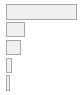

4.1 Análisis descriptivo
| Label | Stats / Values | Freqs (% of Valid) | Graph | Valid |
|---|---|---|---|---|
| Justificacion de violencia: Carabineros reprima marchas (2019) | Mean (sd) : 1.4 (0.9) min < med < max: 1 < 1 < 5 IQR (CV) : 0 (0.6) |
1 : 2664 (78.2%) 2 : 318 ( 9.3%) 3 : 268 ( 7.9%) 4 : 109 ( 3.2%) 5 : 48 ( 1.4%) |
 | 3407 (76.6%) |
| Justificacion de violencia: Carabineros desaloje liceos en toma (2019) | Mean (sd) : 1.7 (1.1) min < med < max: 1 < 1 < 5 IQR (CV) : 1 (0.6) |
1 : 2145 (63.3%) 2 : 549 (16.2%) 3 : 424 (12.5%) 4 : 161 ( 4.7%) 5 : 112 ( 3.3%) |
3391 (76.3%) |
|
| Justificacion de violencia: Estudiantes tiren piedras (2019) | Mean (sd) : 1.5 (1) min < med < max: 1 < 1 < 5 IQR (CV) : 0 (0.6) |
1 : 2554 (75.0%) 2 : 361 (10.6%) 3 : 285 ( 8.4%) 4 : 129 ( 3.8%) 5 : 76 ( 2.2%) |
 |
3405 (76.6%) |
| Justificacion de violencia: Personas dannien inmobiliario publico (2019) | Mean (sd) : 1.3 (0.8) min < med < max: 1 < 1 < 5 IQR (CV) : 0 (0.6) |
1 : 2849 (83.6%) 2 : 231 ( 6.8%) 3 : 212 ( 6.2%) 4 : 66 ( 1.9%) 5 : 48 ( 1.4%) |
 |
3406 (76.6%) |
| Justificacion de violencia: Personas dannien transporte (2019) | Mean (sd) : 1.3 (0.7) min < med < max: 1 < 1 < 5 IQR (CV) : 0 (0.6) |
1 : 2924 (85.8%) 2 : 214 ( 6.3%) 3 : 183 ( 5.4%) 4 : 45 ( 1.3%) 5 : 40 ( 1.2%) |
3406 (76.6%) |
|
| Justificacion de violencia: Personas dannien comercio (2019) | Mean (sd) : 1.2 (0.6) min < med < max: 1 < 1 < 5 IQR (CV) : 0 (0.5) |
1 : 3041 (89.4%) 2 : 178 ( 5.2%) 3 : 132 ( 3.9%) 4 : 24 ( 0.7%) 5 : 28 ( 0.8%) |
3403 (76.5%) |
Existe una tendencia generalizada en los datos descriptivos univariados: más de la mitad de los encuestados considera que nunca se justifica la violencia, independiente de la situación, de los actores involucrados y del fin asociado. Sin embargo, al entrar en detalle se observa cómo los porcentajes varían de acuerdo a la situación. La situación que encuentra mayor justificación es que carabineros desalojen liceos en toma, con un 37.7% asociado a algún grado de justificación. Los casos de represión a marchas pacificas por parte de carabineros y lanzamiento de piedras desde estudiantes a carabineros presentan porcentajes parecidos, mientras un 21.8% de encuestados señala que se justifica el actuar de carabineros, un 25% de encuestados asevera que la táctica de los estudiantes está justificada. Esto muestra una muy leve tendencia a justificar más el actuar de los estudiantes, aunque sigue estando 10 puntos porcentuales abajo del desalojo a tomas por parte de carabineros. Las situaciones que muestren una tendencia mucho más consistente son las del daño a la propiedad. No más del 20% de los encuestados justifica el daño a la propiedad, especialmente el daño a locales comerciales que presenta los niveles de justificación más bajos. Estos datos demarcan un panorama interesante para la profundización del análisis. Parece ser que si se comparan las dos tácticas más comunes en una situación de protesta (tanto de control como de protesta) no hay grandes variaciones en la justificación, sin embargo cuando se consideran situaciones más excepcionales, la justificación por el control social aumenta, y por el cambio social disminuye. A modo de enfasis, llama la atención que pese al clima sostenido de protesta violenta durante los meses del estallido social (Joignant et al. 2020), la destrucción a la propiedad tenga tan baja justificación. Una posible explicación es que la propiedad es vista como un bien de uso público, por lo que su destrucción es perjudicial para la ciudadanía.

Figura 4.1: Matriz de Correlaciones de Pearson para Justificación Violencia
Figura 4.2: Matriz de Correlaciones Policlorica para Justificación Violencia
Las Figuras N° 4.1 y N° 4.2 muestran las correlaciones de pearson y policloricas -respectivamente- para los indicadores de la variable dependiente. En general, la correlación entre indicadores es consistente con respecto a lo que se habría de esperar por la literatura. Los indicadores de carabineros, representando el concepto de violencia por el control social, correlacionan de forma positiva y moderada aproximandose a alta. Esto sustenta la idea de que aluden a un mismo concepto. En el caso de la violencia por el cambio social, el indicador de lanzamiento de piedras por parte de estudiantes es el que que menos correlaciona con los otros del mismo concepto, aunque sigue siendo una correlación positiva moderada aproximandose a alta. Por el lado de los indicadores sobre la destrucción de la propiedad, estos correlacionan de forma positiva y bastante alta en ambas matrices de correlación, demostrando una vez más lo consistentes que son las respuestas con este tipo particular de violencia. Las correlaciones mayores a 0.9 en la Figura N° 4.2 llaman a la cautela y tener en cuenta qué tan distinto son los indicadores entre si, o si más bien los encuestados pensaban en las situaciones presentadas en cada indicador como parte de un todo. Esto llevaría a pensar en un factor latente por si solo, o el uso de indices sumativos.
Estas matrices también aportan a evaluar las condiciones para un análisis factorial exploratorio (AFE). En general, las condiciones se cumplen en las matrices de pearson y no en las polycloricas. En las primeras no hay correlaciones entre indicadores de un factor menores a 0.3 y mayores a 0.8, en cambio en las segundas sí. Se procede al análisis de más condiciones para determinar la aplicabilidad de un AFE.